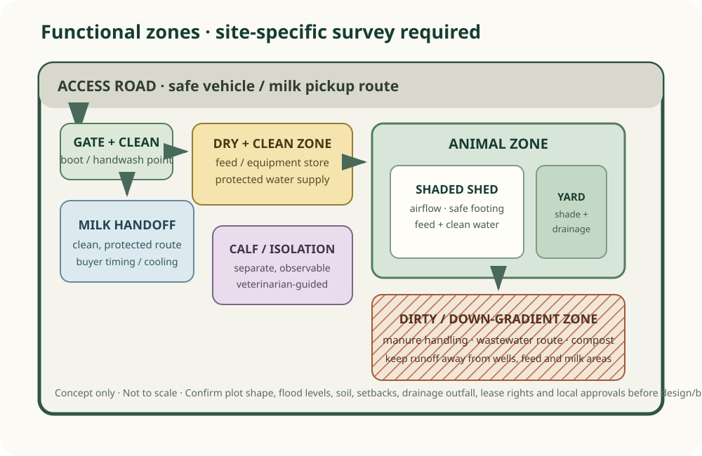
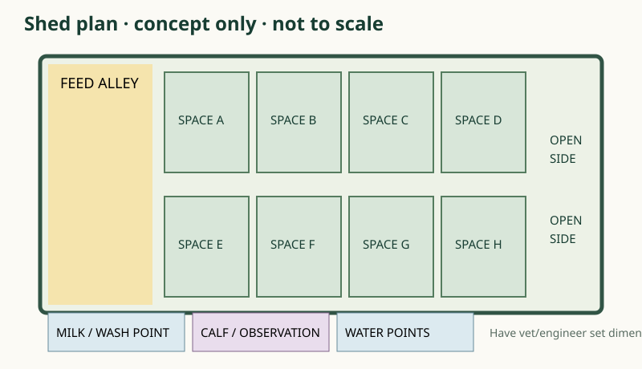
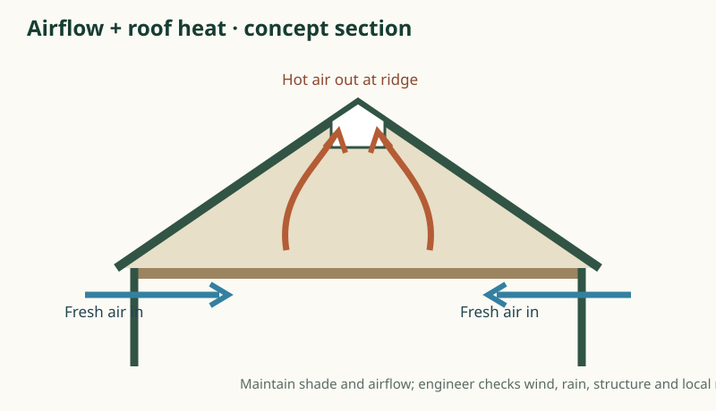
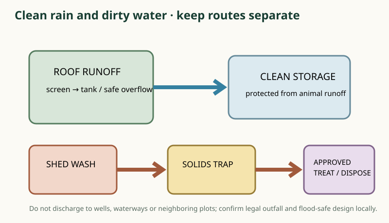

Why it matters
Functional zoning: place the animal shed on a high, well-drained area with shade and cross-ventilation; connect a non-slip loafing yard; keep clean feed storage dry and away from manure; provide a separate clean milking/handling space; isolate sick or incoming animals; route dirty water away from wells and waterways; reserve vehicle turn-around; fence the perimeter.
Practical guidance
Concept diagram: GATE → clean/dirty transition → feed store → shed + loafing yard → milking point → milk handoff. Put calf/sick pens where they can be observed but separated. Put manure collection/compost down-gradient and downwind when feasible. Keep water storage and clean supply protected from runoff.
Use this safely
Buffalo housing needs airflow, shade, secure footing, drainage and enough space for safe movement. Avoid stagnant wet floors, sharp edges, overcrowding, and direct runoff into drinking water. Local hot-humid and monsoon conditions make roof heat, cross-ventilation and stormwater diversion central design checks. Seek CIRB and local professional advice for dimensions and materials.
Local application
On leased land, get written consent for livestock, water access, electrical work, fencing, drainage outfall, temporary/permanent structures, manure handling and repairs. Specify ownership/removal or compensation for improvements, termination notice, renewal, access, and responsibility for restoring the plot.

One-acre planning relationships · not to scale
Measure plot, slope and flood level before drawing construction dimensions. This is a functional adjacency diagram, not a surveyed scale plan.
Concept shed plan

Ventilation and heat

Rainwater and wastewater

Farm movement and clean/dirty separation
Provide separate paths where the plot allows; define one-way work routines and dedicated tools when physical separation is impossible. Not a construction or biosecurity approval.
Water and manure flow at a glance
Rain: clean roof catchment → screen → protected tank → overflow directed away from the shed and foundations.
Wash water: scrape solids first → trap remaining solids → treatment/disposal route approved for the site.
Manure: collect away from feed, milk, wells and storm drains → covered storage/compost plan → use or remove under local environmental and lease conditions.
Investment scenarios · pricing intentionally not fabricated
| Scenario | Concept scope | Cost evidence to collect before deciding |
|---|---|---|
| Low / reversible | Lease-approved repairable shade, simple washable surfaces, temporary partitions, movable troughs and contracted manure removal | Written local material, labor, transport, water/power and lease-restoration quotations |
| Medium | Engineered roof and floor improvements, defined milking/clean area, protected feed store, drainage and water tank | Measured bill of quantities, soil/flood assessment, civil/electrical quotes and approval costs |
| Higher investment | Professionally designed durable shed, separate handling/milking spaces, engineered rainwater and wastewater management, expansion provisions | Licensed design, permits, itemized bids, lifecycle maintenance and lease recovery/ownership terms |
These are scope descriptions, not price estimates. No site survey or local construction quotation has been collected. Do not build or lease based on these diagrams alone.